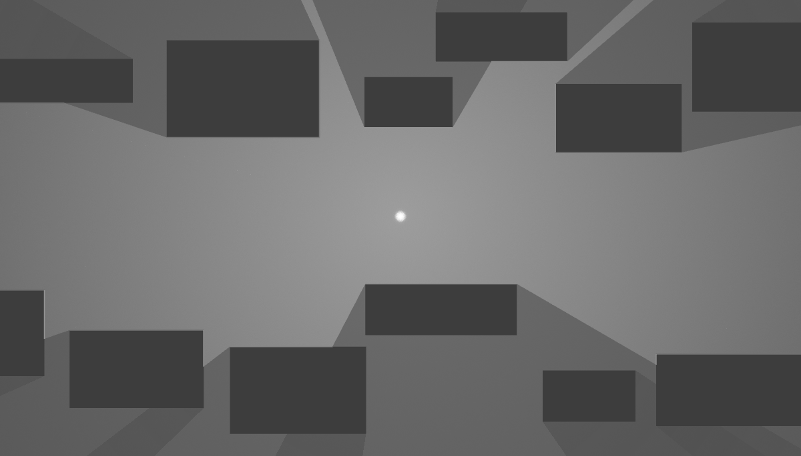
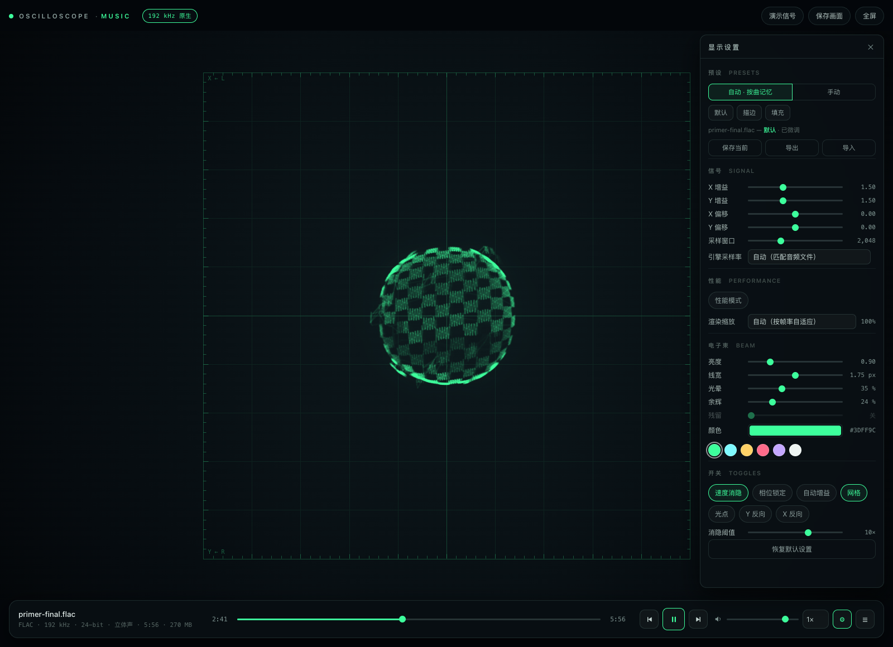
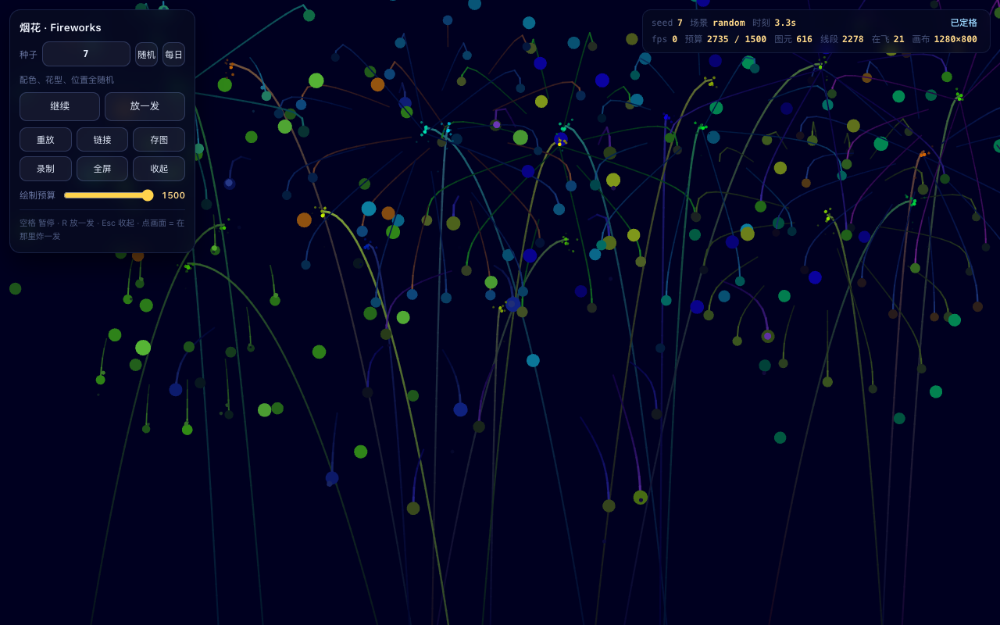

 2D 光线追踪 Demo exact edge locking 2D 点光源硬阴影：每个角区间只投 1 条射线问出遮挡者，边界再精确钉回角点上。射线数由 角点数决定，与 360 无关。 52 条射线/帧 面积误差 0.0002% WebGL2 零依赖 ▸ 每次打开的世界都由种子决定；「调试射线」能看到每条射线都停在角点上。 打开 Demo → 源码 ↗
 示波器音乐播放器 oscilloscope music · XY visualizer 左声道 → X 轴，右声道 → Y 轴。束流按能量累积绘制（WebGL2，无 WebGL 时走 8 位路径）， 没有回扫线，也没有辉光。 能量累积 无回扫线 无辉光 余辉 零依赖 ▸ 不内置音乐，把本地音频（.flac / .wav / .mp3…）拖进窗口即可。 打开 Demo → 源码 ↗
 烟花 · Fireworks procedural fireworks 一场程序化烟花秀。配色、发射点、爆心、花型、寿命、尾迹全由一颗种子决定：同一个数字， 永远是同一场。 5 种花型 单文件 94 KB 可存图 / 录 WebM 零依赖 ▸ 按 R 或点击画面放一发；还有「每日」固定场，和一个藏在种子框里的词。 打开 Demo → 源码 ↗